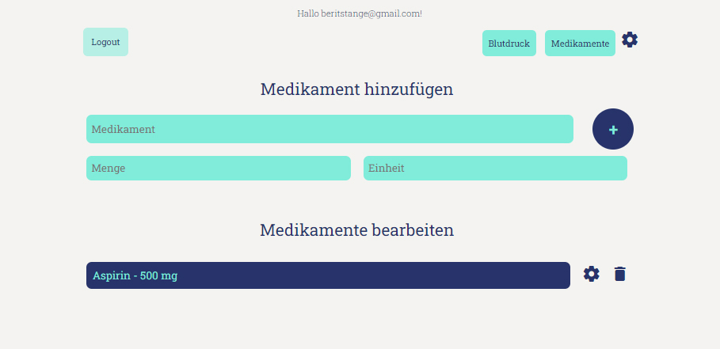
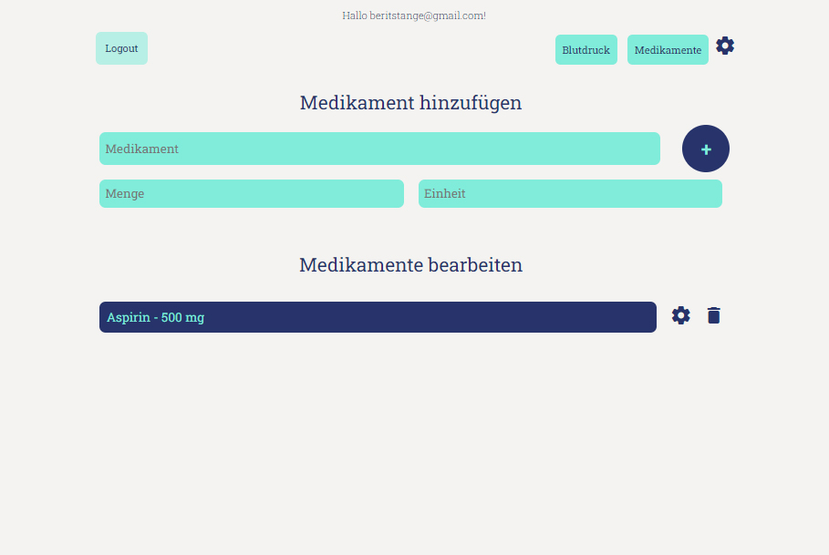
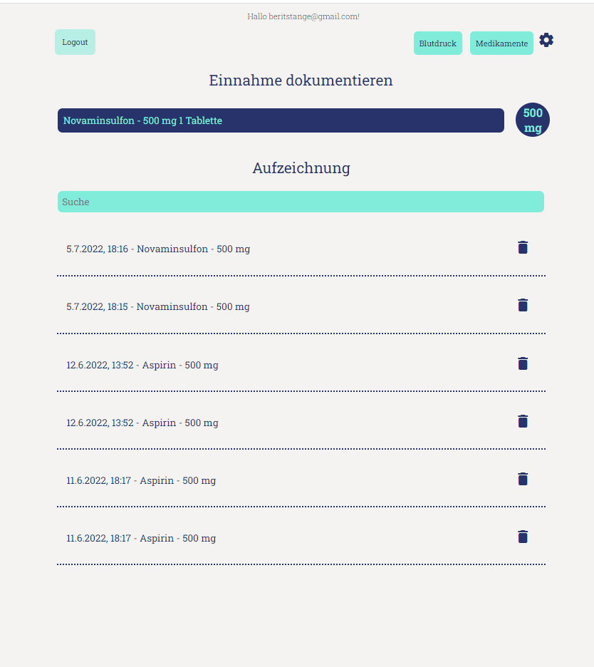
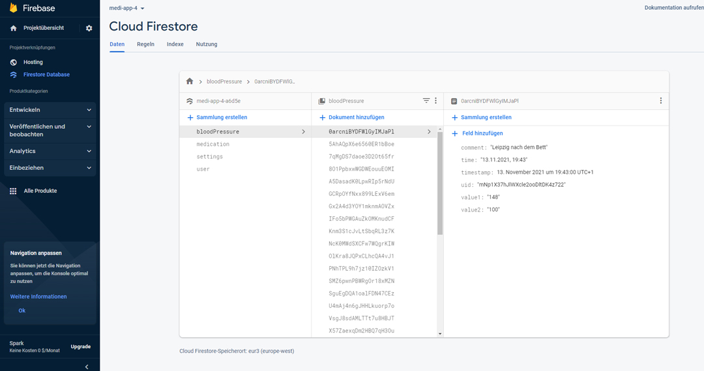
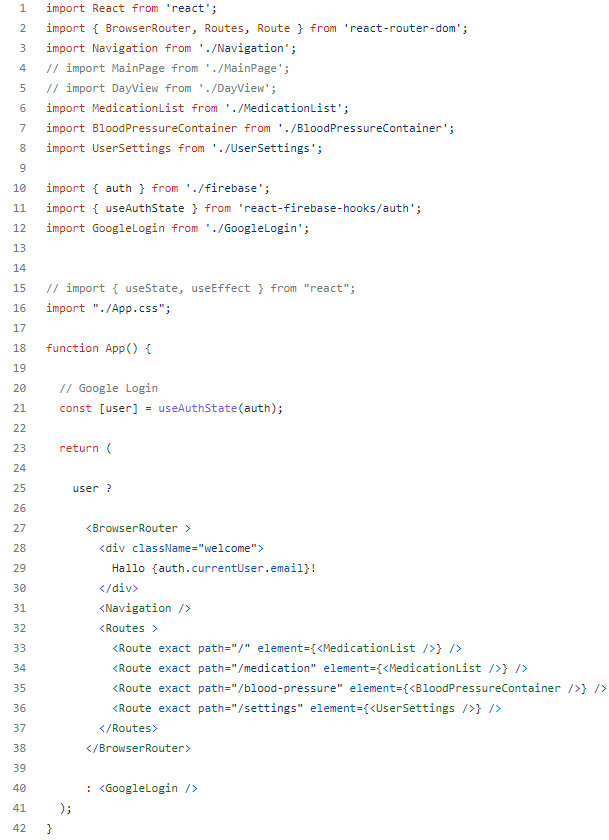
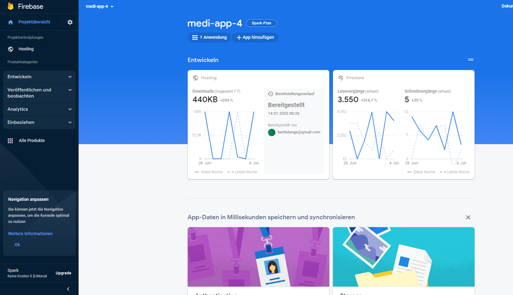
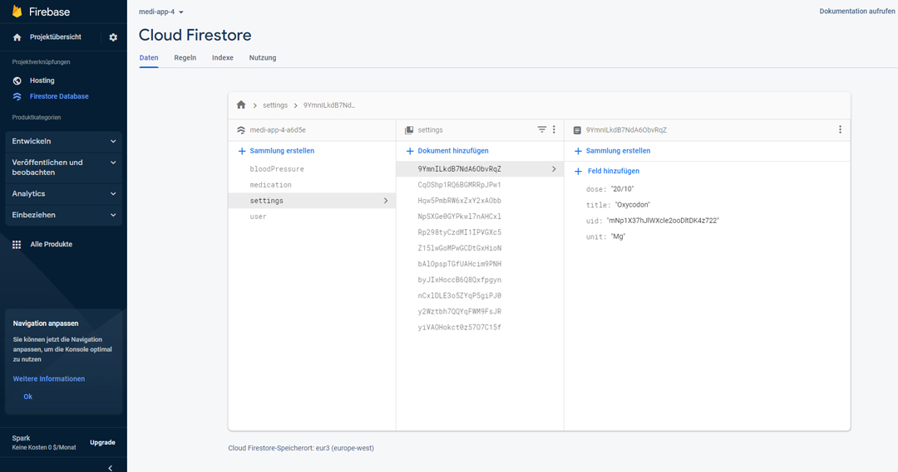
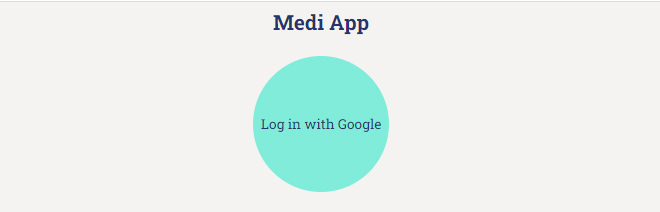
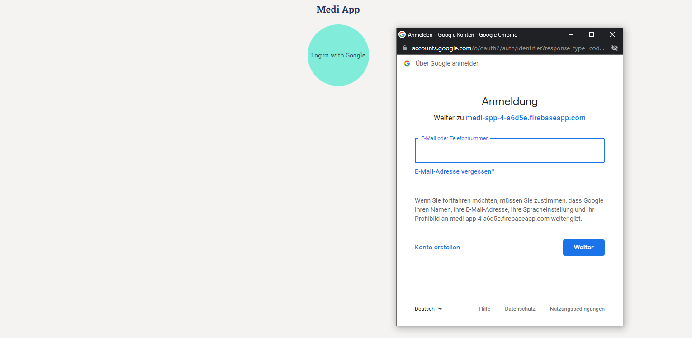

Medi App (React & Firebase)
Case Study
Über das Projekt
„Medi App“ ist eine Web-App zur Nachverfolgung von Medikamenten.
Nutzer können sich mit ihrem Google-Konto anmelden, Medikamente hinzufügen, deren Einnahme mit einem Klick protokollieren
und ihren Blutdruck erfassen.
Das Projekt umfasste die Einrichtung der Datenbank mit Firebase, die Verwendung der Firebase-Befehle
sowie die Entwicklung der Client-Seite mit React und SCSS.
- PWA
- Hosting über Firebase

"Medi App" in Benutzung
Ziel
Ziel des Projekts war es, eine Webanwendung für mein Portfolio unter Verwendung von
Full-Stack-JavaScript-Technologien zu entwickeln.
Die zu lösende Aufgabe bestand darin, sowohl die serverseitigen als auch die clientseitigen Komponenten der
Anwendung von Grund auf neu zu erstellen.

Screenshot der App (main view)
Kontext
Die Anwendung war ein privates Projekt, um mein Wissen zu erweitern und weiter zu üben.

"Medi App" in use
Lösungsansatz
Um eine App zu entwickeln, die die Nachverfolgung von Medikamenten ermöglicht, waren sowohl eine Serverseite zur Speicherung aller Daten als auch eine Clientseite mit der Benutzeroberfläche für die Interaktion mit diesen Informationen erforderlich.

"Medi App" in use
1. Schritt: Erstellen der Serverseite
Der erste Schritt bestand darin, API-Anfragen mithilfe von Firebase-Diensten zu erstellen.
Hierfür musste der Code mit den HTTP-Methoden für die Endpunkte geschrieben werden.
Anschließend wurde die Datenbank mit Firebase eingerichtet.
2. Schritt: Erstellung der Client-Seite
Im zweiten Teil der App-Entwicklung habe ich die Komponenten mit React erstellt.
Die Hauptansichtskomponente enthielt das App-Routing; zudem mussten Komponenten für die
Registrierung und die Anmeldung implementiert werden, die die Authentifizierung abwickelten.
Es wurden Funktionen hinzugefügt, um Medikamente zu einer Liste hinzuzufügen oder daraus zu entfernen.
An diesem Punkt wurden der erste Teil des Projekts (die Serverseite) und die Clientseite zusammengeführt -
alles war miteinander verbunden und über die Benutzeroberfläche zugänglich.

App.js mit Routes

Firebase Projekt

Database in Firebase

"Medi App": Login Screen

Login mit Google Account
Reflektion
Es war eine Herausforderung, die allgemeine Struktur von React sowie die Verwendung von „Props“
und „State“ zu verstehen – also wie die Dinge miteinander verknüpft sind, wie Daten zwischen
Komponenten weitergegeben werden und wie man auf sie zugreifen kann, um sie in Funktionen zu nutzen.
Die Arbeit mit „useEffect“ fiel mir schwer, da es zu einer Endlosschleife bei der Aktualisierung
der Liste aus der Datenbank kam.
Mit der Unterstützung eines erfahrenen Entwicklers integrierte ich schließlich „useRef“,
nachdem verschiedene Lösungsansätze zur Bereinigung (Cleanup) zuvor gescheitert waren.
Zeitlicher Umfang und nächste Schritte
Für beide Teile der Anwendung zusammen – die Serverseite und die Clientseite – habe ich etwa zwei Monate benötigt.